About Me
Hi! I’m Yankai Fu (傅彦凯), a second-year Master student in Computer Science at Peking University, advised by Prof. Shanghang Zhang. My research focuses on building embodied AI systems that can interact with the physical world and achieve human-level dexterity. Feel free to reach out if you’d like to chat.
Research Interests
How can we build embodied AI systems with human-level physical intelligence?
- Dexterous interaction: enabling embodied agents to perform precise, adaptive, and coordinated physical interactions with human-level dexterity.
- Generalizable intelligence: developing systems that transfer across objects, tasks, environments, and embodiments with minimal additional training.
- Physical reasoning: building actionable world models that capture geometry, contact, dynamics, and affordances, connecting multimodal perception to planning and physical action.
News
- [Sep 2026] DeCAL and LiMA are accepted to CoRL 2026.
- [Jul 2026] Data Pyramid for Embodied Manipulation is released, providing a comprehensive survey of data for embodied manipulation.
- [Jul 2026] Dream-Tac is accepted to ACM MM 2026.
- [Mar 2026] AoE is accepted to CVPR 2026 Workshop @ EmbodiedAIinLife.
- [Jan 2026] SpikePingpong is accepted to ICLR 2026.
- [Sep 2025] Joined Peking University as a Master student in Computer Science.
- [Jun 2025] FVP is accepted to ICCV 2025.
Show more
- [Jun 2025] Graduated with a B.E. degree and selected as Outstanding Undergraduate.
- [Apr 2025] CordViP and RoboMIND are accepted to RSS 2025.
- [Sep 2024] SIREN was accepted to S&P 2026.
- [Oct 2024] Honored with the Lei Jun Outstanding Scholarship of Wuhan University (10/60k+, 100K RMB).
- [Mar 2024] CORE is accepted to CogSci 2024 (Oral).
- [Oct 2023] Awarded the Lei Jun Scholarship for Computer Science Undergraduates.
- [Oct 2022] Awarded the National Scholarship (top 0.2% nationally).
Publications
* and † indicate equal contribution and corresponding authorship, respectively. Representative works are highlighted.
2026
-
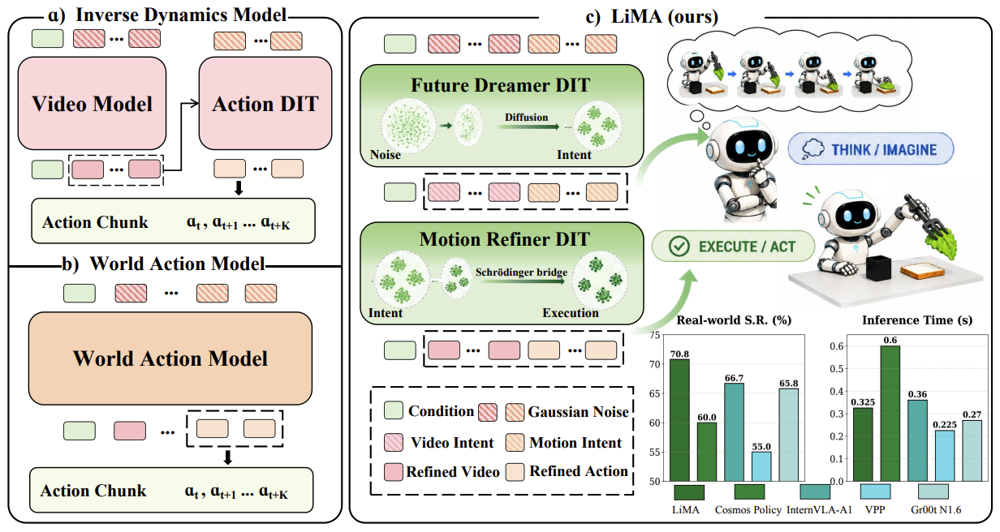
CoRL -
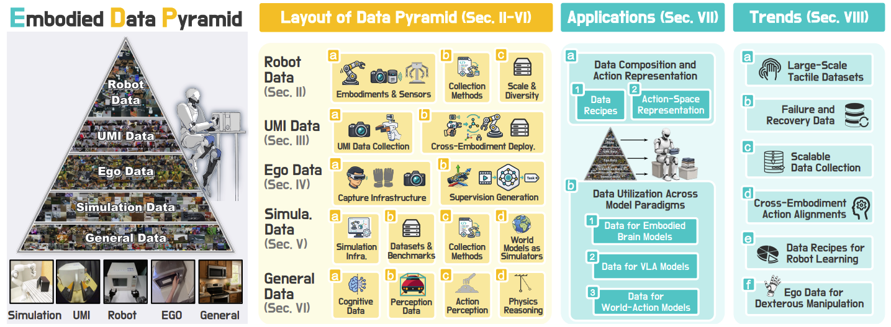
NewarXiv preprint arXiv:2607.24744 -
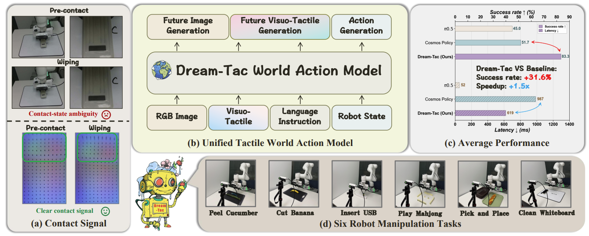
ACM MM -
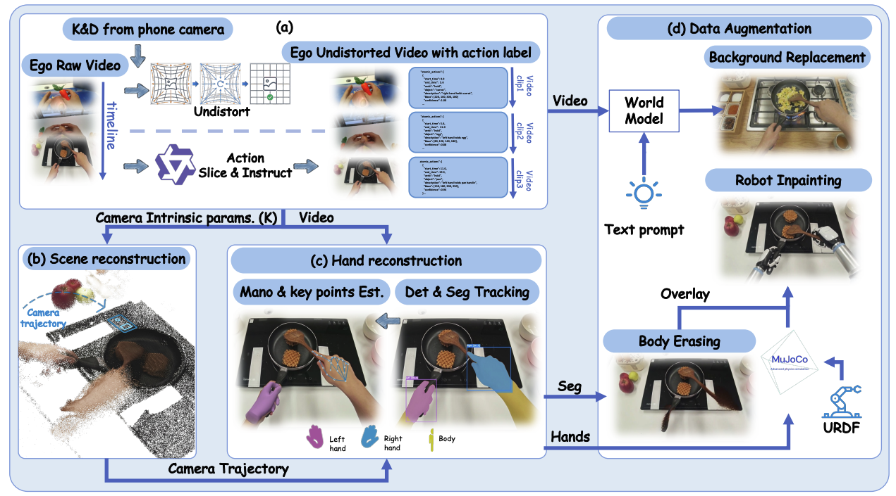
CVPR 2026 WorkshopCVPR 2026 Workshop @ EmbodiedAIinLife -
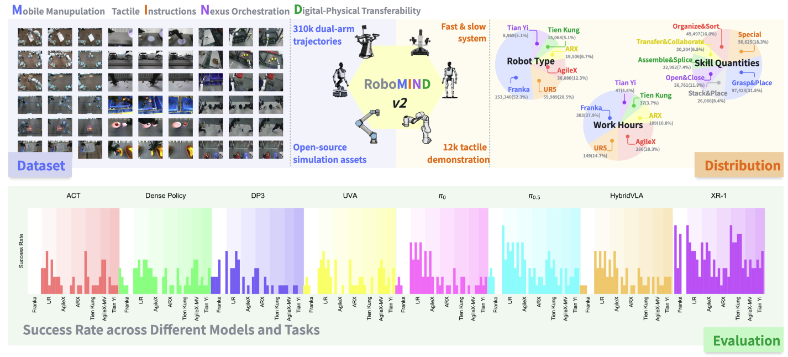
arXivarXiv preprint arXiv:2512.24653 -
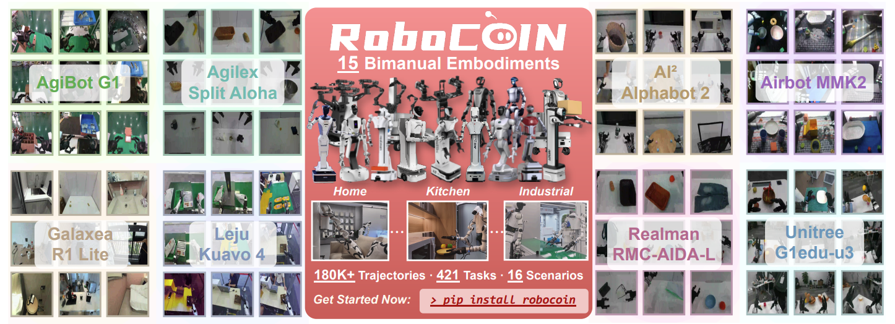
arXivarXiv preprint arXiv:2511.17441 -
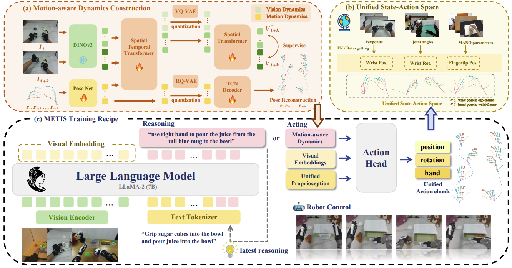
arXivarXiv preprint arXiv:2511.17441 -
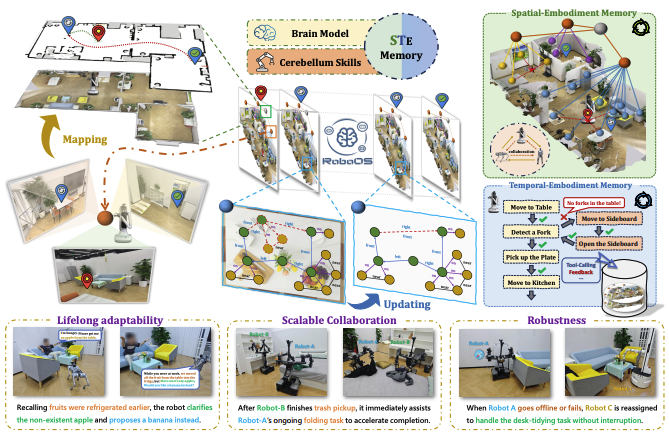
arXivarXiv preprint arXiv:2510.26536 -
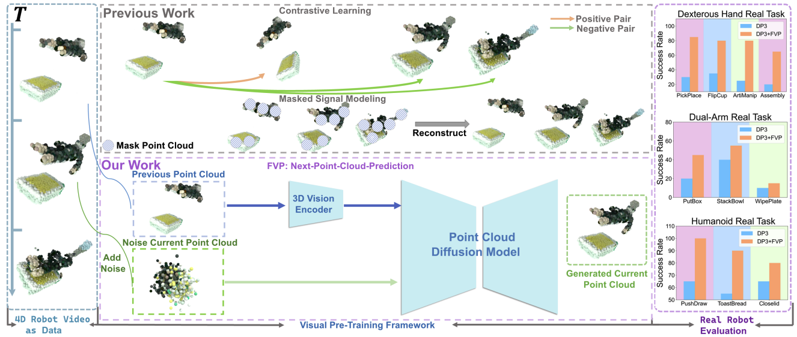
ICCV -
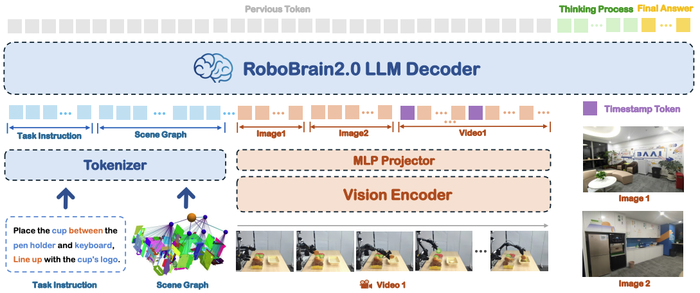
Technical Report -
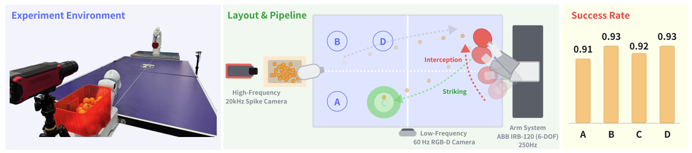
ICLR -
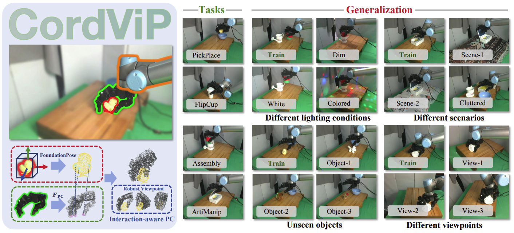
RSS -
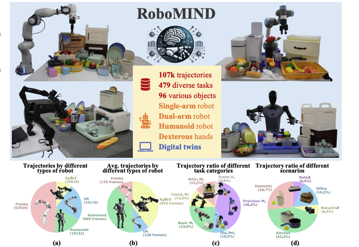
RSS -
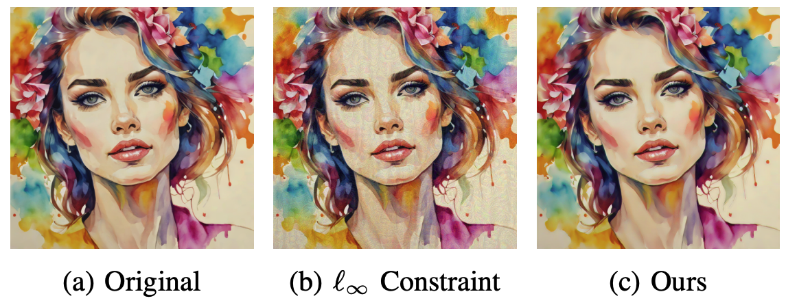
S&P -
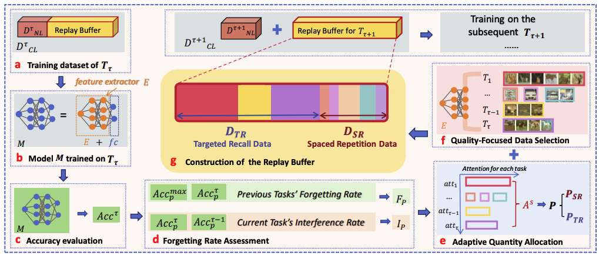
CogSci
2025
2024
Awards
- 2025: Outstanding Graduate of Wuhan University
- 2024: Lei Jun Outstanding Scholarship of Wuhan University (Highest-level Scholarship, 10/60k+, 100k RMB)
- 2023: Lei Jun Scholarship for Computer Science Undergraduates (10K RMB)
- 2022: National Undergraduate Scholarship of Chinese Government (8K RMB)
Education
- Peking University, Master in Computer Science (2025-2028)
- Wuhan University (2021-2025)
- Zhejiang Zhoushan High School (2018-2021)